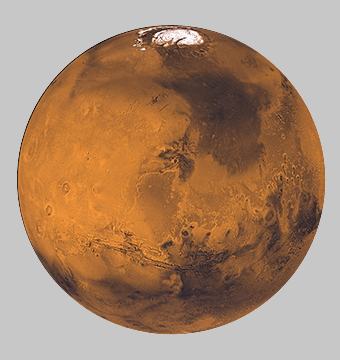
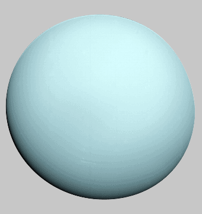
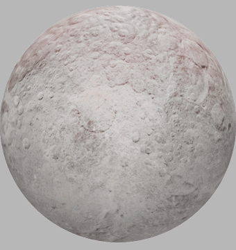

Planet
The smallest and fastest planet, Mercury is the closest planet to the Sun and whips around it every 88 Earth days.
- New -
Mercury
NT$ 109
Spinning in the opposite direction to most planets, Venus is the hottest planet, and one of the brightest objects in the sky.
- New -
Venus
NT$ 89
The place we call home, Earth is the third rock from the sun and the only planet with known life on it - and lots of it too!
- Special -
Earth
NT$ 299
The red planet is dusty, cold world with a thin atmosphere and is home to four NASA robots.

- 10% off -
Mars
NT$ 129
Jupiter is a massive planet, twice the size of all other planets combined and has a centuries-old storm that is bigger than Earth.
- 15% off -
Jupiter
NT$ 119
The most recognizable planet with a system of icy rings, Saturn is a very unique and interesting planet.
- 5% off -
Saturn
NT$ 149
Uranus has a very unique rotation--it spins on its side at an almost 90-degree angle, unlike other planets. than Earth.

- 35% off -
Uranus
NT$ 99
Neptune is now the most distant planet and is a cold and dark world nearly 3 billion miles from the Sun.
- 25% off -
Neptune
NT$ 99
Dwarf Planet
Ceres is the largest object in the asteroid belt, but was reclassified a dwarf planet in 2006 - even though it's 14 times smaller than Pluto.
- -
Ceres
NT$ 129
Pluto will always be the ninth planet to us! Smaller than Earth's moon, Pluto was a planet up until 2006 and has five of its own moons!
- -
Pluto
NT$ 129
Haumea lives in the Kuiper belt and is about the same size as Pluto. It spins very fast, which distorts its shape, making it look like a football.
- -
Huemea
NT$ 129
Also in the Kuiper belt, Makemake is the second brightest object in the belt, behind Pluto. Makemake (and Eris) are the reason Pluto is no longer a planet.
- -
Makemake
NT$ 129
Eris is the same size as Pluto, but three times further from the Sun! It's so far away, we don't know much about this extremely cold and remote dwarf planet.

- -
Eris
NT$ 129
Others
The Sun is the heart of our solar system and its gravity is what keeps every planet and particle in orbit. This yellow dwarf star is just one of billions like it across the Milky Way galaxy.
- Exclusive -
Sun
NT$ 199
The only place beyond Earth that humans have explored, the Moon is the largest and brightest object in our sky - responsible for the tides and keeping Earth stable on its axis.
- Exclusive -
Moon
NT$ 199
Asteroids are small, rocky, debris left over from the formation of our solar system around 4.6 billion years ago. There are currently over 822,000 known asteroids.
- Exclusive -
Asteroids
NT$ 99 / per
Between the orbits of Mars and Jupiter, the asteroid belt contains an estimated 1.9 million asteroids. The total mass of all objects in the asteroid belt is still less than that of Earth's Moon..
- Exclusive -
Asteroid belt
NT$ 99 / per
Author by ChenChen / CKKK